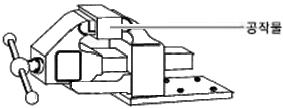
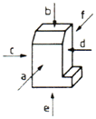
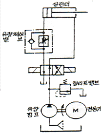
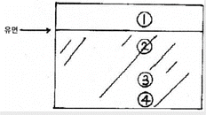
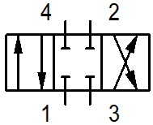
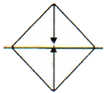

설비보전기능사 (2006-01-22 기출문제)
1과목: 기계보전 일반(대략구분)
1. 비교적 작은 배관이나 관의 살이 얇아 용접이 힘든 경우 용접이음 방법으로 맞는 것은?
- 끼워넣기 용접식
- 맞대기 용접식
- 웰드인서트법
- 플레어 용접식
(정답률: 81%)

2. 단면도를 설명한 것이다. 잘못된 것은?
- 온단면도는 물체의 기본적인 모양을 가장 잘 나타낼 수 있도록 물체의 중심에서 반으로 절단하여 도시한다.
- 한쪽 단면도는 대칭형의 물체를 외형도의 절반과 온단면도의 절반을 조합하여 도시한 것이다.
- 핸들이나 바퀴 등의 암, 리브, 축 등은 90° 회전하여 도시하거나 절단할 곳의 전후를 끊어서 그 사이에 그린다.
- 박판, 형강 등과 같이 절단면이 얇은 경우에는 절단면을 검게 칠하거나 2개의 극히 굵은 실선으로 표시한다.
(정답률: 69%)
3. 다음 중 윤활유의 열화 방지책으로 고려하지 않는 것은?
- 고온은 가능한 피한다.
- 신기계는 세척 후 사용한다.
- 자주 혼합하여 사용한다.
- 교환 시 열화유를 완전히 제거한다.
(정답률: 90%)
4. 줄걸이용 와이어로프는 이상 발생시 폐기시키는데, 이때 와이어로프의 검사 기준 중 맞지 않는 것은?
- 와이어 로프 1연에 소선 수의 10% 이상 절단되었을 시
- 심한 변형이 발생 되었을 시
- 비틀림(kink)이 생길 때
- 와이어 로프 직경의 감소가 공정경의 5% 이상일 때
(정답률: 73%)
5. 고장이 없고 보전이 필요하지 않은 설비를 설계, 제작하는 활동은?
- 생산보전
- 개량보전
- 보전예방
- 예방보전
(정답률: 50%)
6. 다음은 V 벨트의 정비에 관한 사항이다. 가장 거리가 먼 것은?
- 2줄 이상을 건 벨트는 균등하게 쳐져 있지 않아도 된다.
- 풀리의 홈 마모에 주의한다.
- V 벨트는 장기간 보관하면 열화되므로 구입년월일을 확인한 후 사용하는 것이 좋다.
- V 벨트 전동 기구는 설계 단계에서부터 벨트를 거는 구조로 되어 있다.
(정답률: 86%)
7. 다음 중 열화고장을 설명한 것은?
- 초기고장기간과 마모고장기간 사이에 우발적으로 발생하는 고장이다.
- 다른 부품의 고장이 원인이 되어 생기는 고장이다.
- 돌발적으로 발생하는 고장이다.
- 사전의 검사 또는 감시에 의하여 예지되는 고장이다.
(정답률: 53%)
8. CAD에 대한 설명으로 잘못된 것은?
- CAD는 품질 및 생산의 향상, 출력의 다양성, 설계의 표준화, 데이타 베이스 구축의 특성을 갖는다.
- CAD의 시스템을 활용하는 방식은 중앙통제형, 분산처리형, 데이타 베이스 구측의 특성을 갖는다.
- CAD는 기계, 전기ㆍ전자, 건축ㆍ토목, 항공ㆍ선박 및 산업 디자인 등의 다양한 분야에 사용된다.
- CAD는 Computer Automatic Design의 약자이다.
(정답률: 77%)
9. 볼트와 너트의 풀림방지 방법으로 적합하지 않은 것은?
- 스프링, 이붙이, 혀붙이 등의 풀림방지용 와셔를 사용한다.
- 분할핀, 흠달림 너트 등 풀림방지용 너트를 사용한다.
- 테이핑을 하여 체결한다.
- 아연도금 연철선에 의한 와이어 고정방법을 사용한다.
(정답률: 79%)
10. 정비용 공기구 중 체결용 공기구가 아닌 것은?
- 양구 스패너
- L - 렌치
- 기어 풀러
- 타격 스패너
(정답률: 75%)
11. 순환 급유법으로서 모세관현상에 의하여 기름을 마찰면에 보내며 이때 털실이 직접 마찰면에 접촉하게 되는 급유법은?
- 패드 급유법
- 모세관 급유법
- 중력순환 급유법
- 적하 급유법
(정답률: 66%)
12. 다음과 같은 기계 바이스의 나사로 가장 적합한 것은?

- 삼각나사
- 볼나사
- 톱니나사
- 둥근나사
(정답률: 76%)
13. 다음 중 캐비테이션의 방지책이 아닌 것은?
- 펌프의 설치 위치를 되도록 낮게 할 것
- 흡입관을 가능한 짧게 할 것
- 펌프의 회전수를 낮게 할 것
- 흡입양정을 크게 할 것
(정답률: 69%)
14. 입력 축과 출력 축에 드라이브 콘(drive cone)을 비치하고. 그 바깥 가장자리에 강구를 접촉시킨 형태의 변속기는?
- 가변 변속기
- 디스크 무단 변속기
- 링 콘 무단 변속기
- 컵 무단 변속기
(정답률: 62%)
15. 임펠러의 진동발생시 임펠러에 시편을 붙여 진동을 교정하는 작업방법은?
- 밸런싱 작업
- 센터링 작업
- 플러링 작업
- 코오킹 작업
(정답률: 77%)
16. 정반 위에 올려 놓고 정반면을 기준으로 하여 높이를 측정하거나 스크라이버 끝으로 금긋기 작업을 하는데 사용하는 것은?
- 틈새 게이지
- 센터 게이지
- 하이트 게이지
- 다이얼 게이지
(정답률: 66%)
17. 다음은 3상 유도 전동기의 점검 내용이다. 육안으로 점검할 수 없는 것은?
- 기름 누설
- 도장의 벗겨짐 및 오손
- 베어링유의 더러움이나 변질 여부
- 부하 전류의 헌팅
(정답률: 87%)
18. 테스트 해머를 가볍게 두드려 나는 타격음으로 알 수 있는 것은?
- 끼워맞춤 불량
- 치수강도 불량
- 균열
- 급유 불량
(정답률: 79%)
19. 공유압 밸브의 사용목적이 아닌 것은?
- 유량제어
- 온도제어
- 압력제어
- 방향제어
(정답률: 79%)
20. 마찰에 관한 설명 중 옳은 것은?
- 마찰력의 방향은 물체의 운동 방향과 반대 방향이다.
- 운동 마찰력은 정지 마찰계수와 수직항력의 합이다.
- 마찰력의 크기는 마찰계수와 수직항력의 합이다.
- 양질의 에너지는 효율의 100%를 다른 에너지로 전환시킬 수 있다.
(정답률: 75%)
2과목: 설비관리(대략구분)
21. 윤활제가 구비해야 할 조건 중 틀린 것은?
- 화학적으로 안정되고 고온에서 변화가 없을 것
- 인화점이 낮을 것
- 윤활성이 좋을 것
- 적당한 점도를 가질 것
(정답률: 84%)
22. 다음 중 회전 펌프의 종류가 아닌 것은?
- 기어 펌프
- 편심 펌프
- 나사 펌프
- 피스톤 펌프
(정답률: 63%)
23. 다음 그림에서 “a” 방향을 정면도로 할 때 “f” 방향에서 본 투상도의 명칭은?

- 측면도
- 평면도
- 저면도
- 배면도
(정답률: 79%)
24. 다음의 나사 중 백래쉬(back lash)가 현저하게 감소되는 나사는?
- 미터 나사
- 휘트워드 나사
- 볼 나사
- 톱니 나사
(정답률: 71%)
25. 부품의 고장률은 형태에 따라 다양한 유형의 분포로 설명될 수 있다. 다음 중 모수를 변화시켜 다양한 유형의 고장률을 나타낼 수 있는 분포는 무엇인가?
- 와이블 분포
- 지수분포
- 정규분포
- 이항분포
(정답률: 50%)
26. 설비효율 목표달성을 위한 운전자의 자주보전 역할분담 중 일상보전 내용에 속하지 않는 것은?
- 조이기
- 5S 운동
- 급유
- 사용조건 안정화
(정답률: 43%)
27. TPM의 활동 지침에 대한 내용 중 틀린 것은?
- 청소 - 더러움을 없애고 쾌적한 작업환경을 만든다.
- 점검 - 결함을 검출, 제거하여 설비 고장을 미연에 방지한다.
- 이상, 결함 - 복원 또는 개선해야 하는 것이다.
- 복원, 개선 - 성과이다.
(정답률: 50%)
28. 다음 중 설비유효성 판정기준인 설비 종합효율 산출식을 바르게 표현한 것은?
- 설비 종합효율 = 시간 가동률 × 성능 가동률 × 생산량
- 설비 종합효율 = 실질 가동률 × 성능 가동률 × 양품률
- 설비 종합효율 = 시간 가동률 × 실질 가동률 × 양품률
- 설비 종합효율 = 시간 가동률 × 성능 가동률 × 양품률
(정답률: 69%)
29. 전력관리 합리화의 가장 주된 사항은 전력의 낭비를 배제하는 것이다. 다음 중 전력의 직접낭비 요소가 아닌 것은?
- 기계의 공회전
- 누전
- 저능률 설비
- 품질 불량
(정답률: 69%)
30. 공사 관리의 목적을 가장 잘 설명한 것은?
- 설비에 투입되는 비용을 최소화
- 공사를 실시하는 작업자에 대한 요구 관리
- 공사수행상 필요한 제약조건 관리
- 공사사양과 요구되는 사무절차 관리
(정답률: 72%)
3과목: 공유압 일반(대략구분)
31. 다음 설비는 그 목적에 따라 분류하고 있는데, 분류가 잘못된 것은?
- 생산 설비
- 연구 개발 설비
- 판매 설비
- 자동화 설비
(정답률: 50%)
32. 설비보전비용의 분석에서 틀린 것은?
- 단위시간당 보전비는 시간이 갈수록 직선으로 증가한다.
- 단위시간당 누계열화손실은 시간이 길수록 직선으로 증가한다.
- 최소 설비 비용 합계는 열화손실비용선과 단위시간당 보전비가 만나는 지점이다.
- 최소 비용점이 수리한계이다.
(정답률: 42%)
33. 치공구의 설계시 고려할 사항으로 거리가 먼 것은?
- 운전ㆍ취급이 쉬워야 한다.
- 부착과 해체가 어렵더라도 정밀하면서 세밀한 설계가 이루어져야 한다.
- 전 작업 단계에서 설비를 검사 할 수 있는 구조로 되어 있어야 한다.
- 절삭에 의해서 생긴 칩을 제거하기 쉬운 구조로 해야 한다.
(정답률: 76%)
34. 설비보전의 기록 효과와 관계가 먼 것은?
- 소요될 보전비의 견적을 위한 기초자료
- 설비 예산편성의 기초자료
- 수리시기 예측 기초자료
- 생산용 자재의 적정 재고량 계산을 위한 기초자료
(정답률: 55%)
35. 가공 및 조립형 설비의 6대 로스에 속하지 않은 것은?
- 고장 로스
- 계획정지 로스
- 준비ㆍ조정 로스
- 속도 저하 로스
(정답률: 61%)
36. 품질불량이 발생하지 않는 조건을 갖는 설비를 유지하기 위한 활동이 아닌 것은?
- 설비 생애비용의 최적화
- 불량발생 근원 추구
- 품질 특성과 설비정도와의 관계 규명
- 예지능력 개발
(정답률: 44%)
37. 계측화의 방식을 설명한 것은?
- 기업의 목적을 명확히 확립할 것
- 기업을 과학적 합리적으로 관리 운영하는 방침을 수립할 것
- 계측관리에 대해서 공정을 객관적으로 명기하도록 공정도를 작성할 것
- 정보 검출부로서 계측기를 정비하고, 계측관리의 체계를 확립할 것
(정답률: 59%)
38. FMEA는 시스템의 잠재적 결함을 조직적으로 조사하는 설계기법의 하나로 설비에 대한 평가와 개선을 실시할 수 있는 방법이다. 이 기법에서 산출되는 위험우선수(RPN) 값에 포함되지 않는 것은?
- 치명등급
- 로스등급
- 발생등급
- 발견등급
(정답률: 56%)
39. 생산보전을 위한 일반적 관리 시스템으로서 설비보전의 직접적 기능이 아닌 것은?
- 설비 검사(점검)
- 설비 정비(일상보전)
- 설비 수리
- 설비 자재 관리
(정답률: 72%)
40. 압력제어 밸브를 사용하지 않는 것은?
- 감압밸브에 의한 제어회로
- 언로드 회로
- 시퀀스 회로
- 차동 회로
(정답률: 51%)
41. 도면의 유압회로로 설계된 유압장치의 작업상 특성을 설명할 때 잘못 설명된 것은?

- 릴리프 밸브의 가동율이 높다.
- 미터인 방식의 속도제어 회로이다.
- 압력 에너지의 손실과 유온 상승이 많다.
- 부하의 크기에 따라 펌프 토출압력이 변화한다.
(정답률: 52%)
42. 주회로의 압력보다 저압으로 감압시켜 분기회로 구성에 사용되는 밸브 명칭은?
- 시퀀스 밸브
- 릴리프 밸브
- 감압 밸브
- 무부하 밸브
(정답률: 80%)
43. 유체의 흐름을 한쪽 방향으로만 흐르게 하고 역류할 때 곧바로 차단시키는 밸브는?
- 스톱 밸브
- 체크 밸브
- 시퀀스 밸브
- 릴리프 밸브
(정답률: 80%)
44. 유압 회로의 일부에 배압을 발생시키고자 할 때 사용하는 밸브로 적합한 것은?
- 무부하 밸브
- 카운터 밸런스 밸브
- 시퀀스 밸브
- 리듀싱 밸브
(정답률: 60%)
45. 오일탱크의 구성요소가 아닌 것은?
- 버플
- 유면계
- 축압기
- 스트레이너
(정답률: 46%)
46. 압축공기 조정기기(서비스 유니트)의 구성요소 중 하나인 윤활기의 작동원리(효과)는?
- 베르누이 정리
- 도플러 효과
- 벤츄리 원리
- 파스칼 원리
(정답률: 46%)
47. 다음은 탱크의 단면을 나타낸 것이다. 스트레이나를 취부할 가장 좋은 위치는?

- ①과 같이 유면 윗쪽
- ②와 같이 유면 바로 아래
- ③과 같이 바닥에서 좀 떨어진 곳
- ④와 같이 바닥
(정답률: 62%)
48. 그림의 기호가 갖고 있는 기능을 설명한 것 중 틀린 것은?

- 실린더 내의 압력을 제거할 수 있다.
- 실린더가 전진운동을 할 수 있다.
- 실린더가 후진운동을 할 수 있다.
- 모터가 정지할 수 있다.
(정답률: 52%)
49. 에너지로서의 공기압을 만드는 장치는?
- 공기 냉각기
- 공기 압축기
- 공기 탱크
- 공기 건조기
(정답률: 77%)
50. 다음 기호의 명칭은?

- 필터
- 냉각기
- 가열기
- 공기청정기
(정답률: 50%)
4과목: 산업안전(대략구분)
51. 다음 중 그 기능이 다른 유압 제어 밸브는?
- 감압 밸브
- 릴리프 밸브
- 언로딩 밸브
- 유량 조절 밸브
(정답률: 47%)
52. 단위 체적당 유체의 질량을 무엇이라 하는가?
- 비중
- 밀도
- 비체적
- 비중량
(정답률: 59%)
53. 공압 액추에이터의 속도조절에 일반적으로 사용되는 것은?
- 압력제어 밸브
- 방향제어 밸브
- 유량제어 밸브
- 축압기
(정답률: 55%)
54. 유해물질 저장용기의 표시사항이 아닌 것은?
- 유해물질의 명칭
- 성분 및 함유량
- 인체에 미치는 영향
- 압력방출장치의 성능
(정답률: 76%)
55. 해머는 다음 중 어느 것을 사용해야 안전한가?
- 쐐기가 없는 것
- 타격면에 홈이 있는 것
- 타격면이 평탄한 것
- 머리가 깨어진 것
(정답률: 78%)
56. 다음은 보호안경 재질의 구비조건을 설명한 것이다. 잘못된 것은?
- 면체는 규격 기준에 의한다.
- 핸드 클립은 전기도체로 비난연성이어야 한다.
- 필터 플레이트 및 커버 플레이트는 차광 안경과 같다.
- 면체 이외의 플라스틱 부품은 실용상 지장이 없는 강도이어야 한다.
(정답률: 62%)
57. 손작업 공구의 사용방법으로써 적당치 않은 것은?
- 작업대 위의 공구는 작업중에도 정리한다.
- 스패너는 단번에 크게 돌리지 않는다.
- 서어피스 게이지의 바늘 끝은 위쪽으로 향하게 둔다.
- 정 작업시에는 보호안경을 쓴다.
(정답률: 63%)
58. 안전사고의 이유에 해당되지 않은 것은?
- 안전수칙을 겉으로만 지키는 척한다.
- 새로운 안전수칙 시정방법을 귀찮게 생각한다.
- 자신의 기능을 과신하지 않는다.
- 외적인 조건에 정신이 팔려 있고 의욕이 없다.
(정답률: 71%)
59. 산업안전의 유지로 얻을 수 있는 이점으로 틀린 것은?
- 직장의 신뢰도를 높여준다.
- 이직률이 감소된다.
- 기업의 투자경비가 증대된다.
- 기술의 축적과 품질이 향상된다.
(정답률: 67%)
60. 고압가스 충전용기를 차량에 적재, 운반할 때 당해 차량의 전후 보기 쉬운 곳에 “위험 고압가스”라는 경계 표시는 무슨색으로 써야 되는가?
- 청색
- 노란색
- 검은색
- 적색
(정답률: 68%)